Normalization and contrast in spatialdata-plot#
This tutorial covers the norm= argument: how spatialdata-plot turns scalar data values into
colors, and every knob you have to control contrast. By the end you should be able to:
Explain what a
normdoes and when its limits are chosen for you.Set fixed contrast limits and choose how out-of-range values are drawn.
Pick the right scaling — linear, logarithmic, power, or percentile — for your data.
Give each image channel its own contrast, and use
normon shapes, points, and labels.Recognize the datashader caveat and the cases the renderer validates for you.
What a norm is#
A norm is a matplotlib.colors.Normalize
instance. It maps scalar data values → [0, 1] before the colormap turns them into colors, and it does
two things:
Sets the contrast limits
vmin/vmax— the data values that map to the bottom and top of the cmap.Sets the scaling in between — linear, log, power, percentile-clipped — chosen by the subclass.
If you don’t pass a norm, you get a plain Normalize whose vmin/vmax are autoscaled to the data
min/max. That is the default everywhere and it is unchanged.
The one rule: when
vmin/vmaxare unset, they autoscale from the data, and how they autoscale is decided by the norm subclass.spatialdata-plotdelegates to each norm’s own logic, so everyNormalizesubclass works — including the percentile one below — with no special-casing.
Which renderers take norm#
Renderer |
|
Notes |
|---|---|---|
|
a |
single = broadcast & autoscaled per channel; list = one per channel |
|
a |
scales a continuous |
|
a |
continuous |
|
a |
scales a continuous |
Images are the only renderer that accepts a list, because an image has several channels that may each want their own contrast.
Setup#
import matplotlib.pyplot as plt
import numpy as np
import spatialdata as sd
import spatialdata_plot as sdp # noqa: F401 (registers the .pl accessor)
from matplotlib.colors import LogNorm, Normalize, PowerNorm, SymLogNorm
from spatialdata_plot import PercentileNormalize
sdata = sd.datasets.blobs() # blobs_image has 3 channels: [0, 1, 2]
sdata
SpatialData object
├── Images
│ ├── 'blobs_image': DataArray[cyx] (3, 512, 512)
│ └── 'blobs_multiscale_image': DataTree[cyx] (3, 512, 512), (3, 256, 256), (3, 128, 128)
├── Labels
│ ├── 'blobs_labels': DataArray[yx] (512, 512)
│ └── 'blobs_multiscale_labels': DataTree[yx] (512, 512), (256, 256), (128, 128)
├── Points
│ └── 'blobs_points': DataFrame with shape: (<Delayed>, 4) (2D points)
├── Shapes
│ ├── 'blobs_circles': GeoDataFrame shape: (5, 2) (2D shapes)
│ ├── 'blobs_multipolygons': GeoDataFrame shape: (2, 1) (2D shapes)
│ └── 'blobs_polygons': GeoDataFrame shape: (5, 1) (2D shapes)
└── Tables
└── 'table': AnnData (26, 3)
with coordinate systems:
▸ 'global', with elements:
blobs_image (Images), blobs_multiscale_image (Images), blobs_labels (Labels), blobs_multiscale_labels (Labels), blobs_points (Points), blobs_circles (Shapes), blobs_multipolygons (Shapes), blobs_polygons (Shapes)
1. The default — per-channel min/max#
With no norm, every channel is scaled independently to its own min and max. This is the historical default.
sdata.pl.render_images("blobs_image").pl.show()
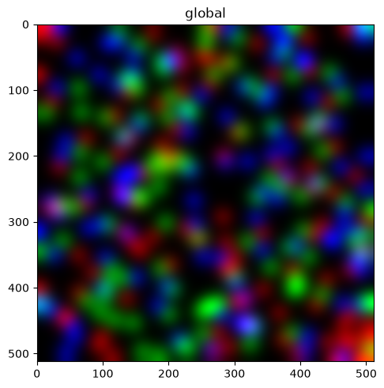
2. Fixed contrast limits — Normalize(vmin, vmax)#
Pin the window yourself. A single Normalize on a multi-channel image is broadcast to every channel.
We render one channel with a colorbar so the limits are visible.
sdata.pl.render_images("blobs_image", channel=0, norm=Normalize(vmin=0.0, vmax=0.5), colorbar=True).pl.show()
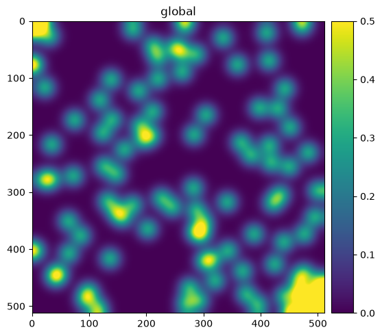
3. Clipping — what happens outside [vmin, vmax]#
With clip=False (the default), values below vmin or above vmax are drawn in the colormap’s under/over
colors. With clip=True, they are clamped to the ends instead. We use a cmap with distinct under/over colors
to make the difference obvious.
First, clip=False — out-of-range pixels show magenta (under) and red (over):
cmap = plt.cm.viridis.copy()
cmap.set_under("magenta")
cmap.set_over("red")
sdata.pl.render_images("blobs_image", channel=0, cmap=cmap, norm=Normalize(0.1, 0.5, clip=False)).pl.show()
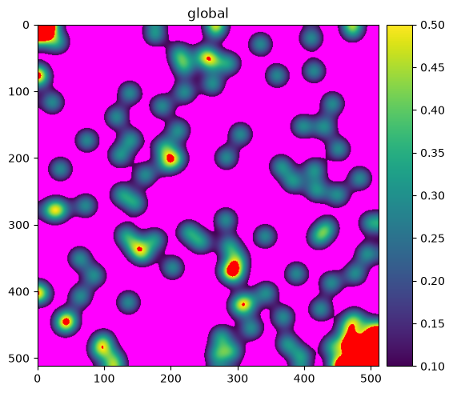
Now clip=True — the same out-of-range pixels are clamped to the cmap ends instead:
sdata.pl.render_images("blobs_image", channel=0, cmap=cmap, norm=Normalize(0.1, 0.5, clip=True)).pl.show()
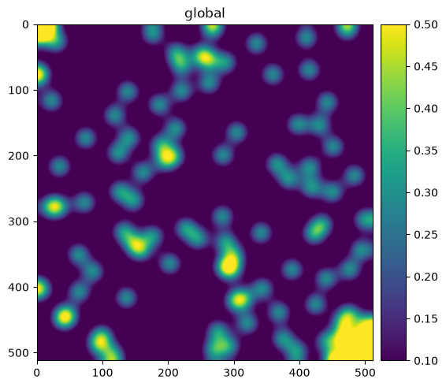
4. Logarithmic scaling — LogNorm#
For data spanning orders of magnitude. spatialdata-plot guards the log domain: limits autoscale from the
strictly-positive values only, so a non-positive vmin never raises a late “Invalid vmin or vmax”.
sdata.pl.render_images("blobs_image", channel=0, norm=LogNorm(), colorbar=True).pl.show()
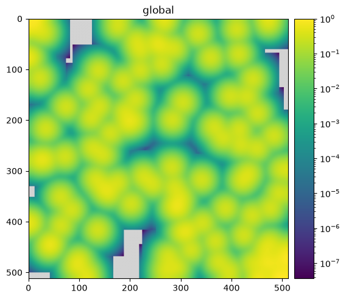
5. Other matplotlib norms work too#
Because the limits come from each norm’s own logic, any Normalize subclass plugs in. Two common ones:
PowerNorm (gamma correction) and SymLogNorm (log scaling with a linear region around zero).
sdata.pl.render_images("blobs_image", channel=0, norm=PowerNorm(gamma=0.5), colorbar=True).pl.show()
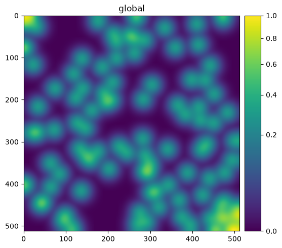
sdata.pl.render_images("blobs_image", channel=0, norm=SymLogNorm(linthresh=0.05), colorbar=True).pl.show()
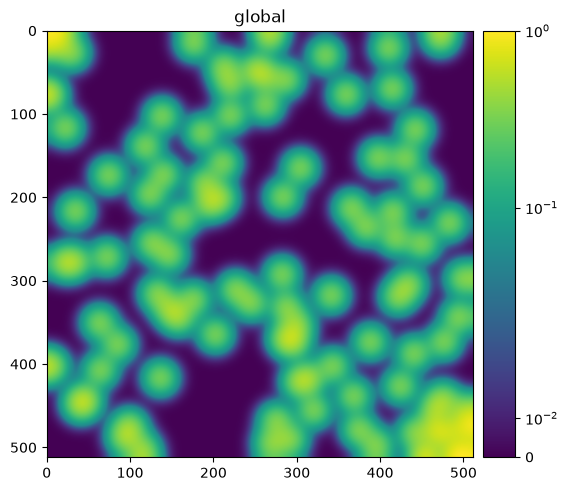
6. Percentile contrast — PercentileNormalize#
Heavy-tailed images (fluorescence, Xenium morphology) often look dim: a single bright outlier sets the min/max
vmax and crushes the rest of the signal to near-black. PercentileNormalize(pmin, pmax) derives the limits
from data percentiles instead — the same idea as the contrast sliders in viewers like Xenium Explorer.
pmin/pmaxare validated to satisfy0 <= pmin < pmax <= 100.NaN / inf / masked pixels are excluded from the percentile computation.
A single instance is autoscaled independently per channel.
Here is the default min/max rendering of one channel:
sdata.pl.render_images("blobs_image", channel=0).pl.show()
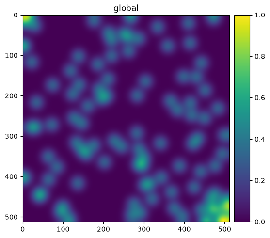
And the same channel with the top 10% of values clipped, lifting the bulk of the signal:
sdata.pl.render_images("blobs_image", channel=0, norm=PercentileNormalize(0, 90)).pl.show()
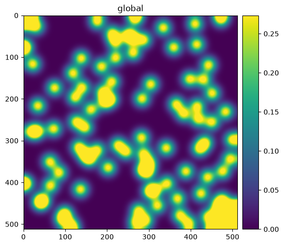
7. Per-channel norms for images#
Pass a list of norms, one per channel (its length must equal the number of channels). You can mix subclasses freely — give each channel exactly the contrast it needs.
norms = [PercentileNormalize(0, 99), PercentileNormalize(0, 90), PercentileNormalize(0, 80)]
sdata.pl.render_images("blobs_image", channel=[0, 1, 2], norm=norms).pl.show()
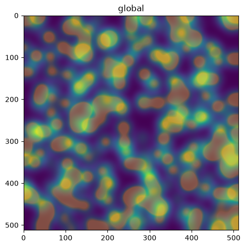
mixed = [Normalize(0, 0.5), LogNorm(), PercentileNormalize(2, 98)]
sdata.pl.render_images("blobs_image", channel=[0, 1, 2], norm=mixed, cmap=[plt.cm.gray] * 3).pl.show()
WARNING render_images: You're blending multiple cmaps. If the plot doesn't look like you expect, it might be
because your cmaps go from a given color to 'white', and not to 'transparent'. Therefore, the 'white' of
higher layers will overlay the lower layers. Consider using 'palette' instead.
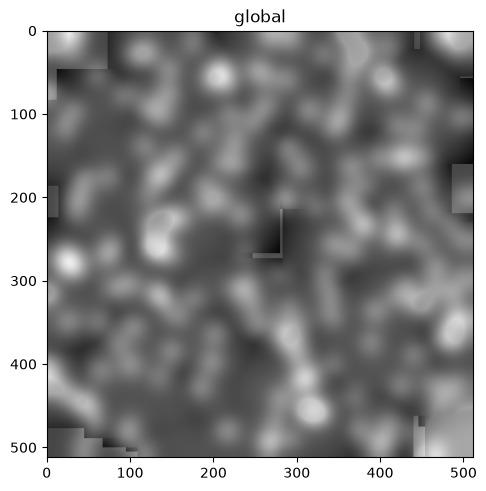
8. Combining with transfunc#
transfunc transforms the raw array first, then norm scales the result. So transfunc=np.sqrt with a
norm operates on the square-rooted data — handy for pairing a fixed transform with explicit limits.
sdata.pl.render_images("blobs_image", channel=0, transfunc=np.sqrt, norm=Normalize(0.0, 0.7), colorbar=True).pl.show()
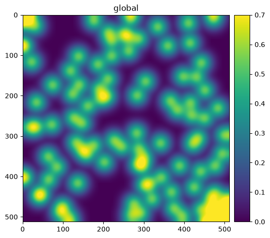
9. True RGB images#
When the channels are literally named {r, g, b(, a)}, the RGB path composites them with one shared scale to
preserve hue balance. If you pass a norm with explicit vmin/vmax, it is applied per channel and clipped
to [0, 1]; otherwise channels are scaled by their dtype.
rac = sd.datasets.raccoon() # a real RGB photo
rac.pl.render_images("raccoon").pl.show()
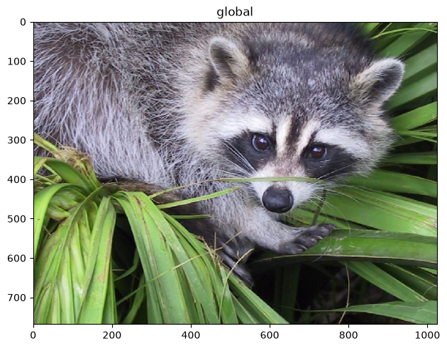
rac.pl.render_images("raccoon", norm=Normalize(0.0, 0.5, clip=True)).pl.show()
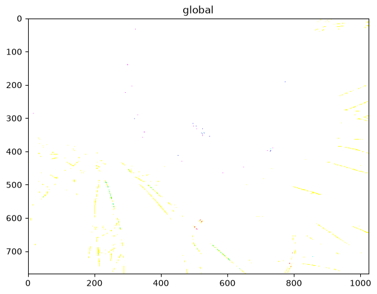
10. Norms on shapes, points, and labels#
For non-image renderers, norm scales a continuous color= column. The same resolved norm drives both the
fill colors and the colorbar, so the bar always matches the pixels — a LogNorm colorbar stays logarithmic.
Shapes, colored by a continuous geometry column:
sdata.pl.render_shapes("blobs_circles", color="radius", norm=Normalize(), colorbar=True).pl.show()
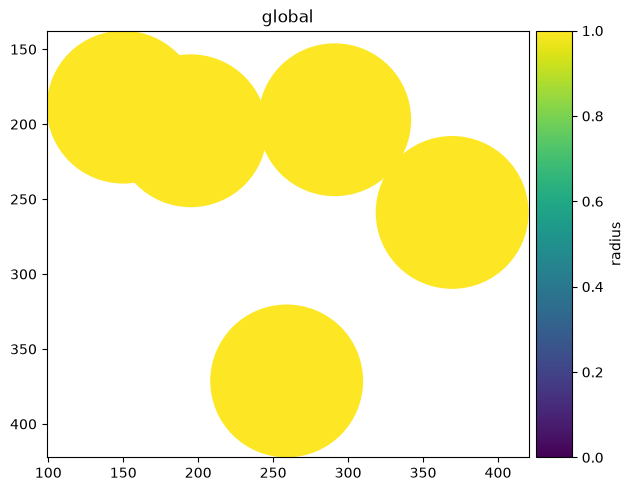
sdata.pl.render_shapes("blobs_circles", color="radius", norm=PercentileNormalize(5, 95), colorbar=True).pl.show()
Points, colored by a continuous column:
sdata.pl.render_points("blobs_points", color="instance_id", norm=Normalize(), colorbar=True).pl.show()
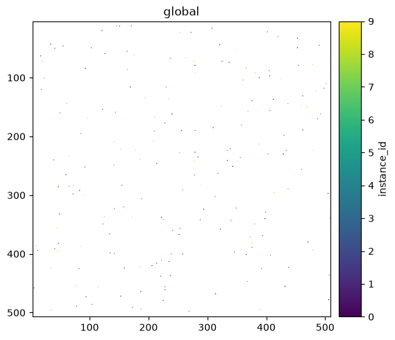
Labels, colored by a continuous table column:
sdata.pl.render_labels("blobs_labels", color="channel_0_sum", norm=PercentileNormalize(2, 98), colorbar=True).pl.show()
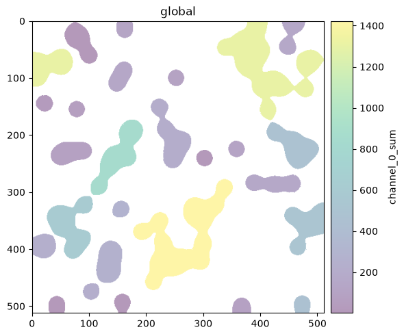
11. The datashader caveat#
On the datashader backend, contrast autoscales to the aggregated value range, not to a norm’s
percentiles. Explicit vmin/vmax are still honored. For percentile-driven contrast on points, use the
default matplotlib backend.
sdata.pl.render_points("blobs_points", color="instance_id", method="datashader", norm=Normalize()).pl.show()
12. Edge cases the renderer handles for you#
The renderer validates norm inputs up front and fails with an actionable message
rather than deep inside matplotlib.
A per-channel norm list of the wrong length is rejected with a clear message:
try:
sdata.pl.render_images("blobs_image", channel=[0, 1, 2], norm=[Normalize(0, 1)] * 2, cmap=[plt.cm.gray] * 3).pl.show()
except ValueError as e:
print("ValueError:", e)
ValueError: Length of 'norm' list (2) must match the number of channels (3).
And invalid percentile bounds are caught at construction time:
for bad in [(50, 50), (90, 10), (-1, 50), (0, 101)]:
try:
PercentileNormalize(*bad)
except ValueError as e:
print(f"PercentileNormalize{bad} -> {e}")
PercentileNormalize(50, 50) -> Require 0 <= pmin < pmax <= 100, got pmin=50, pmax=50.
PercentileNormalize(90, 10) -> Require 0 <= pmin < pmax <= 100, got pmin=90, pmax=10.
PercentileNormalize(-1, 50) -> Require 0 <= pmin < pmax <= 100, got pmin=-1, pmax=50.
PercentileNormalize(0, 101) -> Require 0 <= pmin < pmax <= 100, got pmin=0, pmax=101.
Summary#
normis a matplotlibNormalize; the default is per-channel min/max and is unchanged.Limits come from each norm’s own logic, so
Normalize,LogNorm,PowerNorm,SymLogNorm, andPercentileNormalizeall just work.PercentileNormalize(pmin, pmax)fixes heavy-tailed dimness with no new parameter — it’s opt-in.Only
render_imagesaccepts a list of norms (one per channel); single instances broadcast.The colorbar always reflects the resolved norm; datashader autoscales to the aggregate.